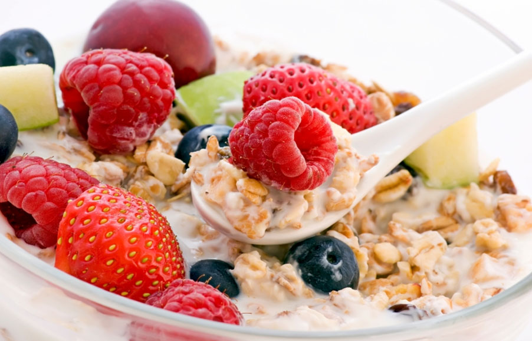

Blog Post

BERRIES ON THE GROVE
By Admin on March 10, 2018We’re always looking for tasty treats that will satisfy our sweet tooth (and hopefully yours too!) and that won’t wreak havoc on waistlines like many traditional sweets typically do. That’s why when we find better-for-you desserts that feel like a real splurge but that won’t ruin our hard work at the gym, we know we’ve gotta share ’em to help you to indulge your taste buds!
Say hello to our latest find… this Yogurt Berry Trifle—it’s creamy and feels indulgent, and provides you with protein.It also contains fiber (courtesy of the berries), and is free of saturated fat Delish. Check! Protein. Check!
back to blog